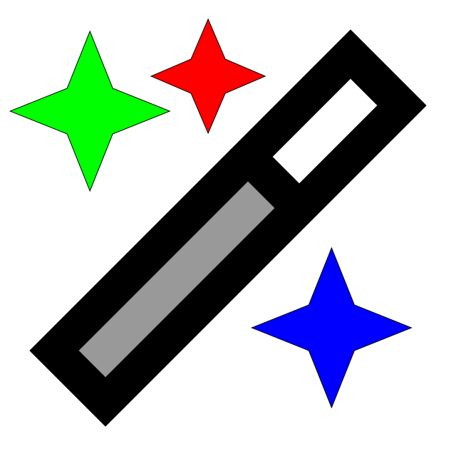

Visual Design and Web Project Assignment 1 - Image 3
Objective
Create a web-optimised favicon for the web site that can be used in both animated and non-animated versions. Only the non-animated version can be used as an actual favicon image - the animated version is for displaying as a badge when a student achieves particular learning goals.
The Process
The starting point was a Font Awesome SVG icon (used under license) of a wand with sparkles (wand-magic-sparkles-sharp-duotone-regular-full).
This was then edited in Inkscape and exported as SVG to produce a recoloured version that can be used as a favicon for the web site (the non-animated version).

To achieve the animation, the svg file was edited as a text file to add sparkle-1, sparkle-2 and sparkle-3 classes to the different elements in the svg, which could be animated with CSS.
<?xml version="1.0" encoding="UTF-8" standalone="no"?>
<svg
viewBox="0 0 640 640"
version="1.1"
id="faviconImage"
xmlns="http://www.w3.org/2000/svg">
<path opacity=".4" d="M109.9 492L348 253.9L386.1 292L148 530.1L109.9 492z" />
<path d="m 492,42.1 89,89 17,17 -17,17 -416,416 -17,17 -89,-89 -17,-17 17,-17 416,-416 z M 109.9,492 148,530.1 386.1,292 348,253.9 Z M 492,109.9 381.9,220 420,258.1 530.1,148 Z" style="stroke:#000000;stroke-opacity:1" />
<path class="sparkle-1" d="m 292.10708,186.94453 -24,-56 -56,-24 56,-23.999997 24,-56 24,56 56,23.999997 -56,24 z" style="stroke:#000000;stroke-opacity:1" />
<path class="sparkle-2" d="m 94.206072,123.97209 31.999998,-80.000003 32,80.000003 80.00001,32 -80.00001,32 -32,80 -31.999998,-80 -79.999995,-32 z" style="stroke:#000000;stroke-opacity:1" />
<path class="sparkle-3" d="m 353.37735,460.00437 80,-32.00001 32,-80 32,80 80,32.00001 -80,32 -32,80 -32,-80 z" style="stroke:#000000;stroke-opacity:1" />
</svg>
The resulting svg file was injected into the page as embedded SVG with JavaScript (which allows it to be used on multiple pages) so that the CSS animation could be applied to the different elements of the SVG. The animation was created using CSS keyframes to create a simple sparkle effect on the wand icon.
/* Favicon sparkle star colours */
.sparkle-1 {
fill: #ff0000; /* Red sparkle */
}
.sparkle-2 {
fill: #00ff00; /* Green sparkle */
}
.sparkle-3 {
fill: #0000ff; /* Blue sparkle */
}
/* Animated sparkle colors - activated when parent svg has 'animated' class */
svg.animated .sparkle-1 {
animation: colorChange1 1.5s infinite;
}
svg.animated .sparkle-2 {
animation: colorChange2 1.5s infinite;
animation-delay: 0.5s;
}
svg.animated .sparkle-3 {
animation: colorChange3 1.5s infinite;
animation-delay: 1s;
}
@keyframes colorChange1 {
0%, 100% { fill: #FF1744; } /* Deep Red */
33% { fill: #00E676; } /* Bright Green */
66% { fill: #FFD600; } /* Vibrant Yellow */
}
@keyframes colorChange2 {
0%, 100% { fill: #2979FF; } /* Bright Blue */
33% { fill: #FF6D00; } /* Deep Orange */
66% { fill: #E040FB; } /* Bright Purple */
}
@keyframes colorChange3 {
0%, 100% { fill: #00E5FF; } /* Cyan */
33% { fill: #FF4081; } /* Hot Pink */
66% { fill: #76FF03; } /* Lime Green */
}